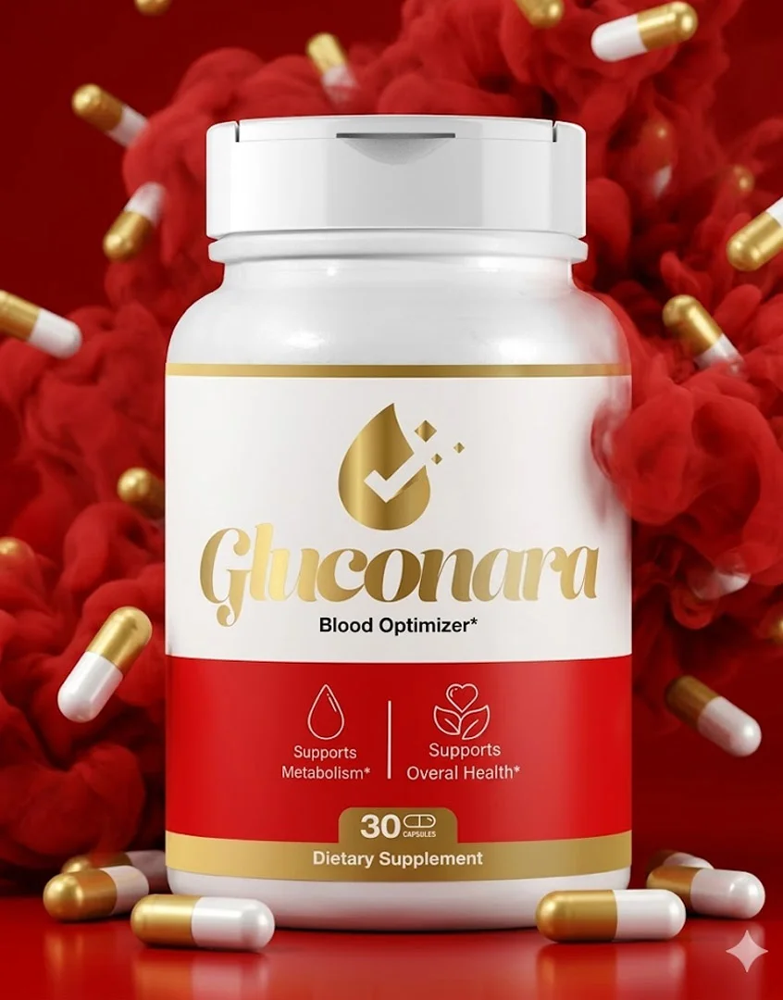
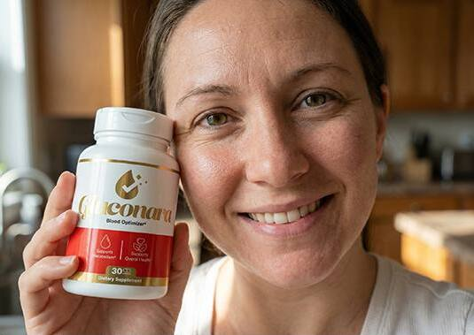
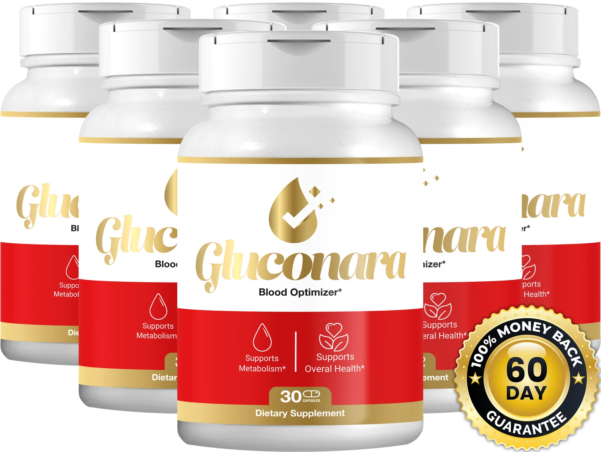

Support Healthy Blood Sugar & Steady Metabolic Balance — Naturally
Gluconara is an 8-ingredient formula inspired by traditional botanicals and modern nutrition science, made to help your body manage glucose response, energy dips, and everyday metabolic stress — one capsule at a time.
✓ 60-Day Money-Back Guarantee ✓ Non-GMO ✓ Made in the USA

One Capsule Formula. Eight Purpose-Picked Ingredients.
Gluconara brings together eight carefully selected ingredients in one convenient daily capsule. Each ingredient is chosen for its unique role and formulated to work in harmony, providing comprehensive nutritional support for healthy metabolism, balanced blood sugar already within the normal range, sustained energy, and overall wellness as part of a healthy lifestyle.
Gluconara brings together berberine, chromium, gymnema sylvestre, cinnamon bark, alpha lipoic acid, banaba leaf, bitter melon, and vanadium in a single daily-friendly capsule — dosed to work with your body's own glucose and metabolic pathways, not against them.
Each Gluconara capsule delivers a thoughtfully crafted blend of eight premium ingredients selected for their quality and complementary benefits. Designed to support healthy glucose metabolism, energy production, and overall metabolic wellness, this advanced formula fits seamlessly into your daily routine for consistent nutritional support.
- ✔️ Non-GMO, gluten-free, vegetarian capsules
- ✔️ Manufactured in an FDA-registered, GMP-certified U.S. facility
- ✔️ No artificial fillers, no stimulants, no dairy or soy
- ✔️ Third-party quality checked, batch to batch
A Metabolic Support Formula Built Around How Glucose Actually Behaves
Gluconara isn't a stimulant, a meal-replacement shake, or a "quick fix." It's a daily nutritional supplement designed for adults who want extra support maintaining blood sugar levels that are already within a normal range, smoothing out energy swings, and keeping their metabolism working the way it's meant to — especially as age, stress, and modern diets make that harder every year.
Each ingredient in Gluconara was selected for a specific role: some support how cells respond to glucose, some support insulin sensitivity pathways, and others support the liver and pancreas as part of everyday metabolic function. Together, they're formulated into one capsule taken with breakfast — no complicated regimen required.
See the Full Ingredient ListThree Ways Gluconara Supports Your Metabolism
Rather than chasing a single mechanism, Gluconara's blend is designed to support glucose metabolism from several angles at once.
Gluconara combines eight carefully selected ingredients that work together to support healthy glucose metabolism, energy production, and overall metabolic wellness. Taken daily as part of a balanced lifestyle, the formula provides nutritional support to help your body function at its best.
Supports Healthy Insulin Sensitivity
Berberine HCl and alpha lipoic acid are included to help support the way your cells respond to insulin, part of normal, healthy glucose regulation.
Helps Smooth Post-Meal Glucose Response
Cinnamon bark, gymnema sylvestre, and bitter melon are traditionally used botanicals studied for their role in supporting a balanced response after carbohydrate-rich meals.
Supports Steady, Crash-Free Energy
Chromium picolinate and vanadium are included to support the conversion of food into usable, sustained energy — instead of energy that spikes and crashes.
Key Benefits Customers Report With Gluconara
Individual results vary, and these are not guarantees — but here's what our formula was designed to support.
Balanced Blood Sugar
Formulated to support glucose levels already within a normal, healthy range.
Steadier Energy
Designed to help reduce the afternoon "crash" many people associate with blood sugar swings.
Supports Healthy Cravings
Gymnema sylvestre is traditionally associated with supporting balanced sugar cravings.
Metabolic Wellness
Supports overall metabolic function as part of a healthy diet and active lifestyle.
Everyday Focus
Steadier energy is often linked by customers to steadier focus throughout the day.
Gentle, Non-Stimulant Formula
No caffeine, no jitters — just a once-daily capsule with breakfast.
Inside Every Gluconara Capsule
Eight ingredients, transparently dosed, with no proprietary-blend guessing games.
Berberine HCl
A compound extracted from several plants, widely studied for its role in supporting healthy insulin sensitivity and glucose metabolism.
Cinnamon Bark Extract
A traditional botanical studied for supporting a balanced glucose response after meals.
Gymnema Sylvestre
Known in Ayurvedic tradition as the "sugar destroyer," included to support balanced sugar cravings.
Chromium Picolinate
An essential trace mineral that supports normal
macronutrient metabolism and energy conversion.
ALT: Chromium Picolinate mineral used in
Gluconara
TITLE: Chromium Picolinate
Alpha Lipoic Acid
An antioxidant compound studied for its supportive role in healthy nerve function and metabolic balance.
Banaba Leaf Extract
Standardized for corosolic acid, a compound traditionally associated with healthy glucose uptake.
Bitter Melon Extract
A fruit extract used in traditional wellness practices to support balanced blood sugar.
Vanadium
A trace mineral included at a conservative dose to round out the formula's metabolic support profile.
Grounded in Published Nutrition Research
Each ingredient in Gluconara was chosen because it has been studied — independently, in peer-reviewed nutrition and pharmacology journals — for its relationship to glucose metabolism, insulin sensitivity, or antioxidant support. We didn't invent these compounds; we combined transparently-dosed amounts of well-researched ones into a single, convenient formula.
Gluconara itself, as a finished formula, has not been evaluated by the FDA, and we make no claim that it diagnoses, treats, cures, or prevents diabetes or any disease. What we can say is that our formulation choices are rooted in the published literature around each individual ingredient, and we encourage you to research them for yourself.
8
Researched Ingredients
GMP
Certified Manufacturing
3rd
Party Quality Checks
0
Artificial Fillers
Real Stories From Real Gluconara Customers
Individual results vary. These are testimonials, not clinical guarantees.
"Three months in and my afternoon energy crashes are basically gone. Genuinely glad I gave this a real try instead of giving up after two weeks."
Denise M. Verified Buyer
"Easy to take, no weird aftertaste, and I feel steadier through the day. Ordered the 6-bottle pack because I don't want to run out."
Carlos R. Verified Buyer

"Took about a month before I noticed a real difference, but my cravings for sugary snacks in the evening have definitely calmed down."
Deniel S. Verified Buyer
Choose Your Gluconara Package
The biggest savings — and free shipping — come with the 90-day supply, our most popular option.
Prices shown in USD. Availability and pricing subject to change on the official website.

Try Gluconara Risk-Free for a Full 60 Days
Your satisfaction comes first. That's why every Gluconara order is backed by a 60-day money-back guarantee. Try it with confidence, and if you're not completely satisfied with your experience, simply contact customer support within 60 days for a full refund according to the refund policy.
We're confident enough in this formula to back every single order — even the single-bottle package — with a 60-day, no-questions-asked money-back guarantee. If you don't feel it was the right fit for you, contact our support team within 60 days of your purchase date for a full refund on the product price.
Experience Gluconara with complete peace of mind. Every purchase is protected by our 60-day money-back guarantee, giving you ample time to make it part of your daily routine. If you're not fully satisfied, you can request a refund in accordance with our refund policy—no unnecessary hassle.
Start My Risk-Free OrderSimple, Once-Daily Routine
No shakes to mix, no complicated schedule. Just one capsule, once a day.
Taking Gluconara is simple and convenient. Take **one capsule daily** with a full glass of water, preferably with a meal or as directed on the product label. For the best results, make it part of your daily wellness routine and combine it with a balanced diet, regular physical activity, and healthy lifestyle habits. Consistent use is recommended to provide ongoing nutritional support.
Take One Capsule Each Morning
Take with a glass of water alongside breakfast for best absorption.
Stay Consistent
Metabolic support builds over time — daily consistency matters more than any single dose.
Pair With Healthy Habits
Gluconara is designed to complement, not replace, a balanced diet and regular activity.
Give It 60–90 Days
Most customers describe their best results after two to three months of consistent use, which is why the 3- and 6-bottle packages exist.
Built for Adults Who Want Extra Metabolic Support
- ✓ Adults noticing energy dips after meals
- ✓ Adults who want extra support for blood sugar already within a normal range
- ✓ Adults focused on long-term metabolic wellness
- ✓ Adults who prefer a non-stimulant, capsule-based routine
When To Talk To Your Physician?
- ! Pregnant or breastfeeding individuals
- ! Anyone currently on diabetes or blood-sugar medication
- ! Anyone under 18 years of age
- ! Anyone with an existing medical condition
Why Customers Choose Gluconara
- ✓ Transparent, fully-disclosed dosing
- ✓ Non-stimulant, once-daily formula
- ✓ Manufactured in a GMP-certified U.S. facility
- ✓ 60-day money-back guarantee
- ✓ Free shipping on 3- and 6-bottle packages
What To Know Before You Order
- ! Only sold on the official Gluconara website
- ! Results build gradually — not a same-day fix
- ! Not a replacement for prescribed medication
- ! Individual results vary by person
- ! Stock can sell out during promotional periods
Only Available on the Official Gluconara Website
To protect you from counterfeit or expired product, Gluconara is not sold in retail stores or on general marketplaces. Ordering directly ensures you receive genuine product, current batches, and full guarantee coverage.

Visit Official Website📦 Fast Dispatch
Orders are typically processed and dispatched within 1–2 business days.
🚚 Free US Shipping
Free shipping within the United States on 3- and 6-bottle packages.
🌍 International Delivery
International orders are available; delivery times vary by destination. See our Shipping Policy.
How To Order Gluconara in 3 Steps?
Choose Your Package
Select the 1, 3, or 6-bottle option based on how long you plan to use Gluconara.
Complete Secure Checkout
Enter your shipping details on our encrypted, secure order page.
Track Your Delivery
You'll receive a confirmation email with tracking as soon as your order ships.
Your Gluconara Questions, Answered
Your Metabolism Deserves Real Support, Not Guesswork
Blood sugar swings and energy crashes aren't something you have to just accept. Gluconara brings together eight transparently-dosed, research-inspired ingredients into one simple daily habit — backed by a 60-day guarantee, so trying it costs you nothing but the time it takes to see how you feel.
Ready To Support Your Metabolic Balance?
Join thousands of customers who made Gluconara part of their daily routine — risk-free for 60 days.
Get Gluconara Now